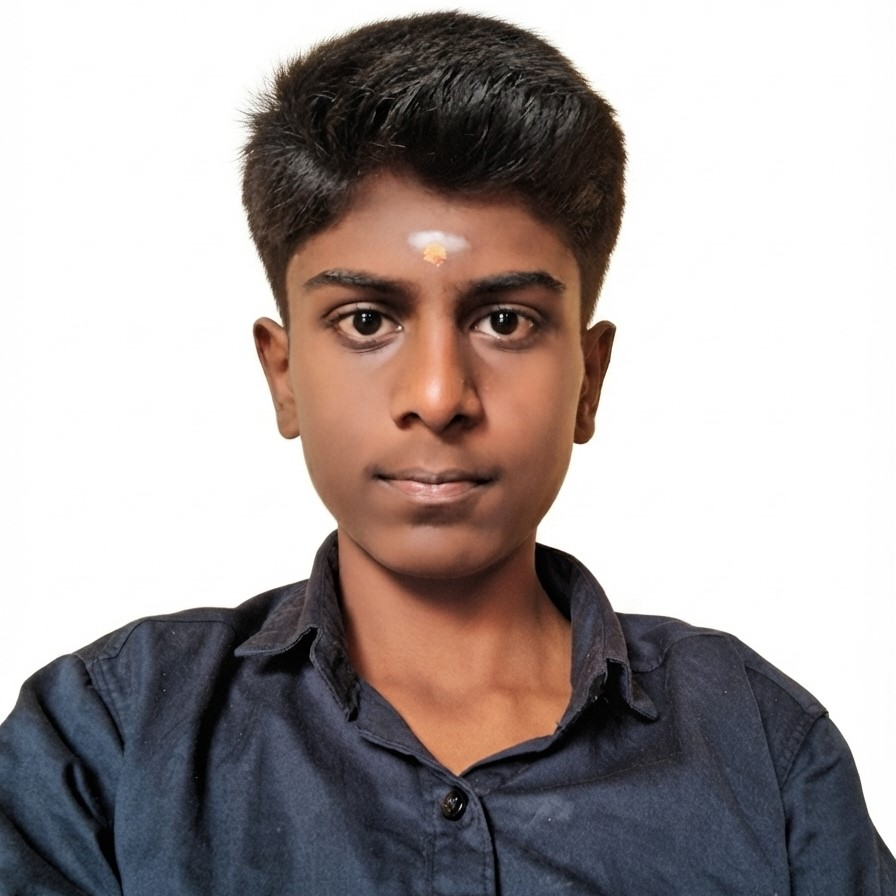

Hi,I'm Vijayanand
First Year B.Sc. Computer Science Student
I am passionate about learning programming and web development.I enjoy exploring new technologies and improving my computer skills.
Know more

I am passionate about learning programming and web development.I enjoy exploring new technologies and improving my computer skills.
Hello! My name is Vijayanand, and I am currently pursuing my First Year Bachelor of Science (B.Sc.) in Computer Science at KG College of Arts and Science, Coimbatore. I completed my Higher Secondary Education at Jaycee Higher Secondary School, Coimbatore, where I developed a strong interest in computers and technology. My passion for learning new concepts motivated me to choose Computer Science as my field of study. As a first-year student, I am building a strong foundation in computer science by learning programming concepts, web development, and other technical subjects. I have learned the basics of HTML and CSS and enjoy creating simple and user-friendly web pages. I believe that every small project helps me improve my knowledge, creativity, and confidence. I am always willing to learn new technologies and improve my practical skills through continuous practice. Apart from academics, I enjoy reading books, listening to music, and exploring new developments in the field of technology. I also like watching educational videos that help me understand programming and improve my problem-solving abilities. I believe that learning is a continuous process, and I always try to make the best use of every opportunity to gain knowledge and experience. My strengths include being a quick learner, having a positive attitude, and being dedicated to my work. I enjoy working individually as well as in a team, and I believe that teamwork helps in sharing ideas and improving skills. I am committed to developing both my technical and communication skills during my college journey. My short-term goal is to gain a strong understanding of programming languages, web development, and software development concepts through academic learning and practical projects. My long-term goal is to become a skilled software professional and build a successful career in the IT industry. I believe that hard work, determination, and continuous learning will help me achieve my career goals and contribute positively to society.
Name: Vijayanand K
Email: kvijayanand2009@gmail.com
Phone: +91 9442933655
Address: 5/529 H-7,Ajantha nagar 9th street,Kanuvai,Coimbatore-641 108, Tamil Nadu
College: KG College of Arts and Science